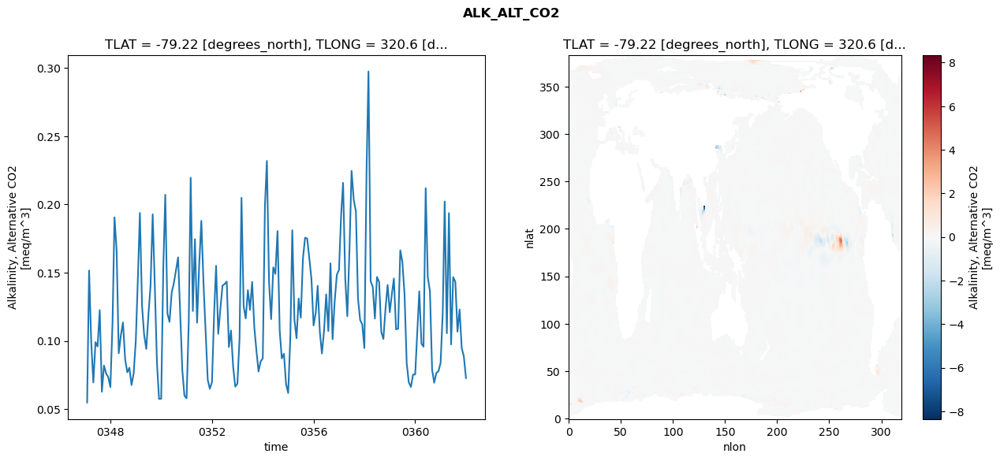
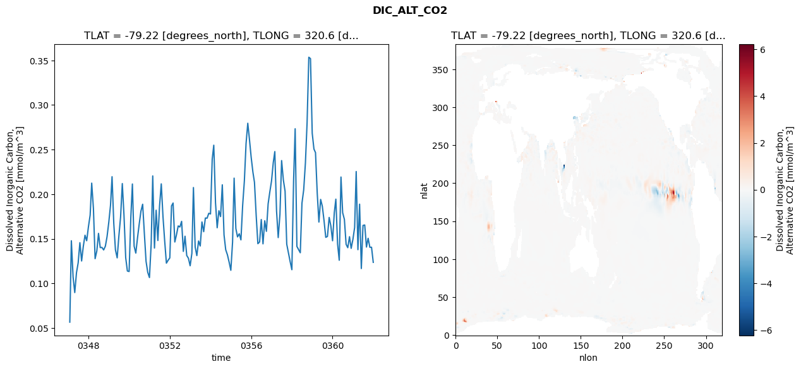
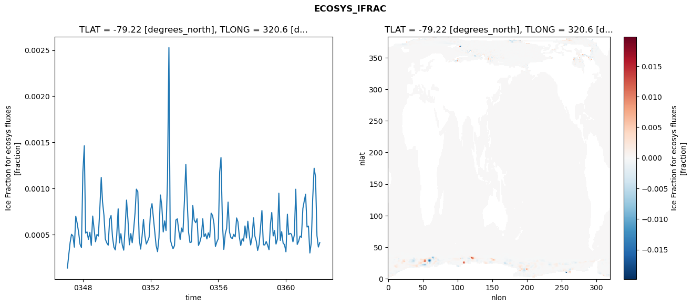
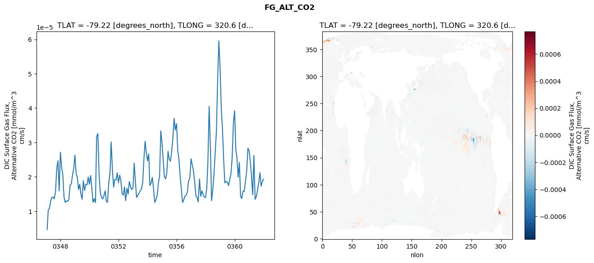

glb-dor_North_Atlantic_basin_008_1999-01-01_00032#
Simulation details#
Case: smyle.cdr-atlas-v0.glb-dor_North_Atlantic_basin_008_1999-01-01_00032.001
Basin: North_Atlantic_basin
Polygon: 8.0
Start date: 1999-01
Show code cell source Hide code cell source
import xarray as xr
import matplotlib.pyplot as plt
Show code cell source Hide code cell source
zarr_store = "/path/to/zarr/store"
# Parameters
zarr_store = "/global/cfs/projectdirs/m4746/Projects/Ocean-CDR-Atlas-v0/data/validation/smyle.cdr-atlas-v0.glb-dor_North_Atlantic_basin_008_1999-01-01_00032.001.validation.zarr"
Show code cell source Hide code cell source
%%time
ds_o = xr.open_zarr(zarr_store).compute()
ds_o
CPU times: user 632 ms, sys: 516 ms, total: 1.15 s
Wall time: 1.38 s
<xarray.Dataset> Size: 2MB
Dimensions: (nlat: 384, nlon: 320, time: 180)
Coordinates:
TLAT float64 8B -79.22
TLONG float64 8B 320.6
ULAT float64 8B -78.95
ULONG float64 8B 321.1
* time (time) object 1kB 0347-02-01 00:00:00 ... 0362-01-01 0...
z_t float32 4B 500.0
Dimensions without coordinates: nlat, nlon
Data variables:
ALK_ALT_CO2_diff (nlat, nlon) float32 492kB nan nan nan ... nan nan nan
ALK_ALT_CO2_rmse (time) float64 1kB 0.05492 0.1516 ... 0.08876 0.07284
DIC_ALT_CO2_diff (nlat, nlon) float32 492kB nan nan nan ... nan nan nan
DIC_ALT_CO2_rmse (time) float64 1kB 0.0566 0.1478 0.1072 ... 0.1406 0.1236
ECOSYS_IFRAC_diff (nlat, nlon) float32 492kB nan nan nan ... nan nan nan
ECOSYS_IFRAC_rmse (time) float64 1kB 0.0001368 0.0002723 ... 0.0004131
FG_ALT_CO2_diff (nlat, nlon) float32 492kB nan nan nan ... nan nan nan
FG_ALT_CO2_rmse (time) float64 1kB 4.657e-06 1.033e-05 ... 1.932e-05xarray.Dataset
- nlat: 384
- nlon: 320
- time: 180
- TLAT()float64-79.22
- long_name :
- array of t-grid latitudes
- units :
- degrees_north
array(-79.22052261)
- TLONG()float64320.6
- long_name :
- array of t-grid longitudes
- units :
- degrees_east
array(320.56250892)
- ULAT()float64-78.95
- long_name :
- array of u-grid latitudes
- units :
- degrees_north
array(-78.95289509)
- ULONG()float64321.1
- long_name :
- array of u-grid longitudes
- units :
- degrees_east
array(321.12500894)
- time(time)object0347-02-01 00:00:00 ... 0362-01-...
- bounds :
- time_bound
- long_name :
- time
array([cftime.DatetimeNoLeap(347, 2, 1, 0, 0, 0, 0, has_year_zero=True), cftime.DatetimeNoLeap(347, 3, 1, 0, 0, 0, 0, has_year_zero=True), cftime.DatetimeNoLeap(347, 4, 1, 0, 0, 0, 0, has_year_zero=True), cftime.DatetimeNoLeap(347, 5, 1, 0, 0, 0, 0, has_year_zero=True), cftime.DatetimeNoLeap(347, 6, 1, 0, 0, 0, 0, has_year_zero=True), cftime.DatetimeNoLeap(347, 7, 1, 0, 0, 0, 0, has_year_zero=True), cftime.DatetimeNoLeap(347, 8, 1, 0, 0, 0, 0, has_year_zero=True), cftime.DatetimeNoLeap(347, 9, 1, 0, 0, 0, 0, has_year_zero=True), cftime.DatetimeNoLeap(347, 10, 1, 0, 0, 0, 0, has_year_zero=True), cftime.DatetimeNoLeap(347, 11, 1, 0, 0, 0, 0, has_year_zero=True), cftime.DatetimeNoLeap(347, 12, 1, 0, 0, 0, 0, has_year_zero=True), cftime.DatetimeNoLeap(348, 1, 1, 0, 0, 0, 0, has_year_zero=True), cftime.DatetimeNoLeap(348, 2, 1, 0, 0, 0, 0, has_year_zero=True), cftime.DatetimeNoLeap(348, 3, 1, 0, 0, 0, 0, has_year_zero=True), cftime.DatetimeNoLeap(348, 4, 1, 0, 0, 0, 0, has_year_zero=True), cftime.DatetimeNoLeap(348, 5, 1, 0, 0, 0, 0, has_year_zero=True), cftime.DatetimeNoLeap(348, 6, 1, 0, 0, 0, 0, has_year_zero=True), cftime.DatetimeNoLeap(348, 7, 1, 0, 0, 0, 0, has_year_zero=True), cftime.DatetimeNoLeap(348, 8, 1, 0, 0, 0, 0, has_year_zero=True), cftime.DatetimeNoLeap(348, 9, 1, 0, 0, 0, 0, has_year_zero=True), cftime.DatetimeNoLeap(348, 10, 1, 0, 0, 0, 0, has_year_zero=True), cftime.DatetimeNoLeap(348, 11, 1, 0, 0, 0, 0, has_year_zero=True), cftime.DatetimeNoLeap(348, 12, 1, 0, 0, 0, 0, has_year_zero=True), cftime.DatetimeNoLeap(349, 1, 1, 0, 0, 0, 0, has_year_zero=True), cftime.DatetimeNoLeap(349, 2, 1, 0, 0, 0, 0, has_year_zero=True), cftime.DatetimeNoLeap(349, 3, 1, 0, 0, 0, 0, has_year_zero=True), cftime.DatetimeNoLeap(349, 4, 1, 0, 0, 0, 0, has_year_zero=True), cftime.DatetimeNoLeap(349, 5, 1, 0, 0, 0, 0, has_year_zero=True), cftime.DatetimeNoLeap(349, 6, 1, 0, 0, 0, 0, has_year_zero=True), cftime.DatetimeNoLeap(349, 7, 1, 0, 0, 0, 0, has_year_zero=True), cftime.DatetimeNoLeap(349, 8, 1, 0, 0, 0, 0, has_year_zero=True), cftime.DatetimeNoLeap(349, 9, 1, 0, 0, 0, 0, has_year_zero=True), cftime.DatetimeNoLeap(349, 10, 1, 0, 0, 0, 0, has_year_zero=True), cftime.DatetimeNoLeap(349, 11, 1, 0, 0, 0, 0, has_year_zero=True), cftime.DatetimeNoLeap(349, 12, 1, 0, 0, 0, 0, has_year_zero=True), cftime.DatetimeNoLeap(350, 1, 1, 0, 0, 0, 0, has_year_zero=True), cftime.DatetimeNoLeap(350, 2, 1, 0, 0, 0, 0, has_year_zero=True), cftime.DatetimeNoLeap(350, 3, 1, 0, 0, 0, 0, has_year_zero=True), cftime.DatetimeNoLeap(350, 4, 1, 0, 0, 0, 0, has_year_zero=True), cftime.DatetimeNoLeap(350, 5, 1, 0, 0, 0, 0, has_year_zero=True), cftime.DatetimeNoLeap(350, 6, 1, 0, 0, 0, 0, has_year_zero=True), cftime.DatetimeNoLeap(350, 7, 1, 0, 0, 0, 0, has_year_zero=True), cftime.DatetimeNoLeap(350, 8, 1, 0, 0, 0, 0, has_year_zero=True), cftime.DatetimeNoLeap(350, 9, 1, 0, 0, 0, 0, has_year_zero=True), cftime.DatetimeNoLeap(350, 10, 1, 0, 0, 0, 0, has_year_zero=True), cftime.DatetimeNoLeap(350, 11, 1, 0, 0, 0, 0, has_year_zero=True), cftime.DatetimeNoLeap(350, 12, 1, 0, 0, 0, 0, has_year_zero=True), cftime.DatetimeNoLeap(351, 1, 1, 0, 0, 0, 0, has_year_zero=True), cftime.DatetimeNoLeap(351, 2, 1, 0, 0, 0, 0, has_year_zero=True), cftime.DatetimeNoLeap(351, 3, 1, 0, 0, 0, 0, has_year_zero=True), cftime.DatetimeNoLeap(351, 4, 1, 0, 0, 0, 0, has_year_zero=True), cftime.DatetimeNoLeap(351, 5, 1, 0, 0, 0, 0, has_year_zero=True), cftime.DatetimeNoLeap(351, 6, 1, 0, 0, 0, 0, has_year_zero=True), cftime.DatetimeNoLeap(351, 7, 1, 0, 0, 0, 0, has_year_zero=True), cftime.DatetimeNoLeap(351, 8, 1, 0, 0, 0, 0, has_year_zero=True), cftime.DatetimeNoLeap(351, 9, 1, 0, 0, 0, 0, has_year_zero=True), cftime.DatetimeNoLeap(351, 10, 1, 0, 0, 0, 0, has_year_zero=True), cftime.DatetimeNoLeap(351, 11, 1, 0, 0, 0, 0, has_year_zero=True), cftime.DatetimeNoLeap(351, 12, 1, 0, 0, 0, 0, has_year_zero=True), cftime.DatetimeNoLeap(352, 1, 1, 0, 0, 0, 0, has_year_zero=True), cftime.DatetimeNoLeap(352, 2, 1, 0, 0, 0, 0, has_year_zero=True), cftime.DatetimeNoLeap(352, 3, 1, 0, 0, 0, 0, has_year_zero=True), cftime.DatetimeNoLeap(352, 4, 1, 0, 0, 0, 0, has_year_zero=True), cftime.DatetimeNoLeap(352, 5, 1, 0, 0, 0, 0, has_year_zero=True), cftime.DatetimeNoLeap(352, 6, 1, 0, 0, 0, 0, has_year_zero=True), cftime.DatetimeNoLeap(352, 7, 1, 0, 0, 0, 0, has_year_zero=True), cftime.DatetimeNoLeap(352, 8, 1, 0, 0, 0, 0, has_year_zero=True), cftime.DatetimeNoLeap(352, 9, 1, 0, 0, 0, 0, has_year_zero=True), cftime.DatetimeNoLeap(352, 10, 1, 0, 0, 0, 0, has_year_zero=True), cftime.DatetimeNoLeap(352, 11, 1, 0, 0, 0, 0, has_year_zero=True), cftime.DatetimeNoLeap(352, 12, 1, 0, 0, 0, 0, has_year_zero=True), cftime.DatetimeNoLeap(353, 1, 1, 0, 0, 0, 0, has_year_zero=True), cftime.DatetimeNoLeap(353, 2, 1, 0, 0, 0, 0, has_year_zero=True), cftime.DatetimeNoLeap(353, 3, 1, 0, 0, 0, 0, has_year_zero=True), cftime.DatetimeNoLeap(353, 4, 1, 0, 0, 0, 0, has_year_zero=True), cftime.DatetimeNoLeap(353, 5, 1, 0, 0, 0, 0, has_year_zero=True), cftime.DatetimeNoLeap(353, 6, 1, 0, 0, 0, 0, has_year_zero=True), cftime.DatetimeNoLeap(353, 7, 1, 0, 0, 0, 0, has_year_zero=True), cftime.DatetimeNoLeap(353, 8, 1, 0, 0, 0, 0, has_year_zero=True), cftime.DatetimeNoLeap(353, 9, 1, 0, 0, 0, 0, has_year_zero=True), cftime.DatetimeNoLeap(353, 10, 1, 0, 0, 0, 0, has_year_zero=True), cftime.DatetimeNoLeap(353, 11, 1, 0, 0, 0, 0, has_year_zero=True), cftime.DatetimeNoLeap(353, 12, 1, 0, 0, 0, 0, has_year_zero=True), cftime.DatetimeNoLeap(354, 1, 1, 0, 0, 0, 0, has_year_zero=True), cftime.DatetimeNoLeap(354, 2, 1, 0, 0, 0, 0, has_year_zero=True), cftime.DatetimeNoLeap(354, 3, 1, 0, 0, 0, 0, has_year_zero=True), cftime.DatetimeNoLeap(354, 4, 1, 0, 0, 0, 0, has_year_zero=True), cftime.DatetimeNoLeap(354, 5, 1, 0, 0, 0, 0, has_year_zero=True), cftime.DatetimeNoLeap(354, 6, 1, 0, 0, 0, 0, has_year_zero=True), cftime.DatetimeNoLeap(354, 7, 1, 0, 0, 0, 0, has_year_zero=True), cftime.DatetimeNoLeap(354, 8, 1, 0, 0, 0, 0, has_year_zero=True), cftime.DatetimeNoLeap(354, 9, 1, 0, 0, 0, 0, has_year_zero=True), cftime.DatetimeNoLeap(354, 10, 1, 0, 0, 0, 0, has_year_zero=True), cftime.DatetimeNoLeap(354, 11, 1, 0, 0, 0, 0, has_year_zero=True), cftime.DatetimeNoLeap(354, 12, 1, 0, 0, 0, 0, has_year_zero=True), cftime.DatetimeNoLeap(355, 1, 1, 0, 0, 0, 0, has_year_zero=True), cftime.DatetimeNoLeap(355, 2, 1, 0, 0, 0, 0, has_year_zero=True), cftime.DatetimeNoLeap(355, 3, 1, 0, 0, 0, 0, has_year_zero=True), cftime.DatetimeNoLeap(355, 4, 1, 0, 0, 0, 0, has_year_zero=True), cftime.DatetimeNoLeap(355, 5, 1, 0, 0, 0, 0, has_year_zero=True), cftime.DatetimeNoLeap(355, 6, 1, 0, 0, 0, 0, has_year_zero=True), cftime.DatetimeNoLeap(355, 7, 1, 0, 0, 0, 0, has_year_zero=True), cftime.DatetimeNoLeap(355, 8, 1, 0, 0, 0, 0, has_year_zero=True), cftime.DatetimeNoLeap(355, 9, 1, 0, 0, 0, 0, has_year_zero=True), cftime.DatetimeNoLeap(355, 10, 1, 0, 0, 0, 0, has_year_zero=True), cftime.DatetimeNoLeap(355, 11, 1, 0, 0, 0, 0, has_year_zero=True), cftime.DatetimeNoLeap(355, 12, 1, 0, 0, 0, 0, has_year_zero=True), cftime.DatetimeNoLeap(356, 1, 1, 0, 0, 0, 0, has_year_zero=True), cftime.DatetimeNoLeap(356, 2, 1, 0, 0, 0, 0, has_year_zero=True), cftime.DatetimeNoLeap(356, 3, 1, 0, 0, 0, 0, has_year_zero=True), cftime.DatetimeNoLeap(356, 4, 1, 0, 0, 0, 0, has_year_zero=True), cftime.DatetimeNoLeap(356, 5, 1, 0, 0, 0, 0, has_year_zero=True), cftime.DatetimeNoLeap(356, 6, 1, 0, 0, 0, 0, has_year_zero=True), cftime.DatetimeNoLeap(356, 7, 1, 0, 0, 0, 0, has_year_zero=True), cftime.DatetimeNoLeap(356, 8, 1, 0, 0, 0, 0, has_year_zero=True), cftime.DatetimeNoLeap(356, 9, 1, 0, 0, 0, 0, has_year_zero=True), cftime.DatetimeNoLeap(356, 10, 1, 0, 0, 0, 0, has_year_zero=True), cftime.DatetimeNoLeap(356, 11, 1, 0, 0, 0, 0, has_year_zero=True), cftime.DatetimeNoLeap(356, 12, 1, 0, 0, 0, 0, has_year_zero=True), cftime.DatetimeNoLeap(357, 1, 1, 0, 0, 0, 0, has_year_zero=True), cftime.DatetimeNoLeap(357, 2, 1, 0, 0, 0, 0, has_year_zero=True), cftime.DatetimeNoLeap(357, 3, 1, 0, 0, 0, 0, has_year_zero=True), cftime.DatetimeNoLeap(357, 4, 1, 0, 0, 0, 0, has_year_zero=True), cftime.DatetimeNoLeap(357, 5, 1, 0, 0, 0, 0, has_year_zero=True), cftime.DatetimeNoLeap(357, 6, 1, 0, 0, 0, 0, has_year_zero=True), cftime.DatetimeNoLeap(357, 7, 1, 0, 0, 0, 0, has_year_zero=True), cftime.DatetimeNoLeap(357, 8, 1, 0, 0, 0, 0, has_year_zero=True), cftime.DatetimeNoLeap(357, 9, 1, 0, 0, 0, 0, has_year_zero=True), cftime.DatetimeNoLeap(357, 10, 1, 0, 0, 0, 0, has_year_zero=True), cftime.DatetimeNoLeap(357, 11, 1, 0, 0, 0, 0, has_year_zero=True), cftime.DatetimeNoLeap(357, 12, 1, 0, 0, 0, 0, has_year_zero=True), cftime.DatetimeNoLeap(358, 1, 1, 0, 0, 0, 0, has_year_zero=True), cftime.DatetimeNoLeap(358, 2, 1, 0, 0, 0, 0, has_year_zero=True), cftime.DatetimeNoLeap(358, 3, 1, 0, 0, 0, 0, has_year_zero=True), cftime.DatetimeNoLeap(358, 4, 1, 0, 0, 0, 0, has_year_zero=True), cftime.DatetimeNoLeap(358, 5, 1, 0, 0, 0, 0, has_year_zero=True), cftime.DatetimeNoLeap(358, 6, 1, 0, 0, 0, 0, has_year_zero=True), cftime.DatetimeNoLeap(358, 7, 1, 0, 0, 0, 0, has_year_zero=True), cftime.DatetimeNoLeap(358, 8, 1, 0, 0, 0, 0, has_year_zero=True), cftime.DatetimeNoLeap(358, 9, 1, 0, 0, 0, 0, has_year_zero=True), cftime.DatetimeNoLeap(358, 10, 1, 0, 0, 0, 0, has_year_zero=True), cftime.DatetimeNoLeap(358, 11, 1, 0, 0, 0, 0, has_year_zero=True), cftime.DatetimeNoLeap(358, 12, 1, 0, 0, 0, 0, has_year_zero=True), cftime.DatetimeNoLeap(359, 1, 1, 0, 0, 0, 0, has_year_zero=True), cftime.DatetimeNoLeap(359, 2, 1, 0, 0, 0, 0, has_year_zero=True), cftime.DatetimeNoLeap(359, 3, 1, 0, 0, 0, 0, has_year_zero=True), cftime.DatetimeNoLeap(359, 4, 1, 0, 0, 0, 0, has_year_zero=True), cftime.DatetimeNoLeap(359, 5, 1, 0, 0, 0, 0, has_year_zero=True), cftime.DatetimeNoLeap(359, 6, 1, 0, 0, 0, 0, has_year_zero=True), cftime.DatetimeNoLeap(359, 7, 1, 0, 0, 0, 0, has_year_zero=True), cftime.DatetimeNoLeap(359, 8, 1, 0, 0, 0, 0, has_year_zero=True), cftime.DatetimeNoLeap(359, 9, 1, 0, 0, 0, 0, has_year_zero=True), cftime.DatetimeNoLeap(359, 10, 1, 0, 0, 0, 0, has_year_zero=True), cftime.DatetimeNoLeap(359, 11, 1, 0, 0, 0, 0, has_year_zero=True), cftime.DatetimeNoLeap(359, 12, 1, 0, 0, 0, 0, has_year_zero=True), cftime.DatetimeNoLeap(360, 1, 1, 0, 0, 0, 0, has_year_zero=True), cftime.DatetimeNoLeap(360, 2, 1, 0, 0, 0, 0, has_year_zero=True), cftime.DatetimeNoLeap(360, 3, 1, 0, 0, 0, 0, has_year_zero=True), cftime.DatetimeNoLeap(360, 4, 1, 0, 0, 0, 0, has_year_zero=True), cftime.DatetimeNoLeap(360, 5, 1, 0, 0, 0, 0, has_year_zero=True), cftime.DatetimeNoLeap(360, 6, 1, 0, 0, 0, 0, has_year_zero=True), cftime.DatetimeNoLeap(360, 7, 1, 0, 0, 0, 0, has_year_zero=True), cftime.DatetimeNoLeap(360, 8, 1, 0, 0, 0, 0, has_year_zero=True), cftime.DatetimeNoLeap(360, 9, 1, 0, 0, 0, 0, has_year_zero=True), cftime.DatetimeNoLeap(360, 10, 1, 0, 0, 0, 0, has_year_zero=True), cftime.DatetimeNoLeap(360, 11, 1, 0, 0, 0, 0, has_year_zero=True), cftime.DatetimeNoLeap(360, 12, 1, 0, 0, 0, 0, has_year_zero=True), cftime.DatetimeNoLeap(361, 1, 1, 0, 0, 0, 0, has_year_zero=True), cftime.DatetimeNoLeap(361, 2, 1, 0, 0, 0, 0, has_year_zero=True), cftime.DatetimeNoLeap(361, 3, 1, 0, 0, 0, 0, has_year_zero=True), cftime.DatetimeNoLeap(361, 4, 1, 0, 0, 0, 0, has_year_zero=True), cftime.DatetimeNoLeap(361, 5, 1, 0, 0, 0, 0, has_year_zero=True), cftime.DatetimeNoLeap(361, 6, 1, 0, 0, 0, 0, has_year_zero=True), cftime.DatetimeNoLeap(361, 7, 1, 0, 0, 0, 0, has_year_zero=True), cftime.DatetimeNoLeap(361, 8, 1, 0, 0, 0, 0, has_year_zero=True), cftime.DatetimeNoLeap(361, 9, 1, 0, 0, 0, 0, has_year_zero=True), cftime.DatetimeNoLeap(361, 10, 1, 0, 0, 0, 0, has_year_zero=True), cftime.DatetimeNoLeap(361, 11, 1, 0, 0, 0, 0, has_year_zero=True), cftime.DatetimeNoLeap(361, 12, 1, 0, 0, 0, 0, has_year_zero=True), cftime.DatetimeNoLeap(362, 1, 1, 0, 0, 0, 0, has_year_zero=True)], dtype=object) - z_t()float32500.0
- long_name :
- depth from surface to midpoint of layer
- positive :
- down
- units :
- centimeters
- valid_max :
- 537500.0
- valid_min :
- 500.0
array(500., dtype=float32)
- ALK_ALT_CO2_diff(nlat, nlon)float32nan nan nan nan ... nan nan nan nan
- cell_methods :
- time: mean
- grid_loc :
- 3111
- long_name :
- Alkalinity, Alternative CO2
- units :
- meq/m^3
array([[ nan, nan, nan, ..., nan, nan, nan], [ nan, nan, nan, ..., nan, nan, nan], [-0.00195312, -0.00244141, 0.00341797, ..., nan, nan, nan], ..., [ nan, nan, nan, ..., nan, nan, nan], [ nan, nan, nan, ..., nan, nan, nan], [ nan, nan, nan, ..., nan, nan, nan]], dtype=float32) - ALK_ALT_CO2_rmse(time)float640.05492 0.1516 ... 0.08876 0.07284
- cell_methods :
- time: mean
- grid_loc :
- 3111
- long_name :
- Alkalinity, Alternative CO2
- units :
- meq/m^3
array([0.05492303, 0.15155093, 0.0987865 , 0.06961211, 0.09911372, 0.09592432, 0.12260575, 0.06278937, 0.08196072, 0.0761472 , 0.07356275, 0.06617197, 0.11370882, 0.19058783, 0.16608814, 0.09103223, 0.10424337, 0.11355474, 0.08663139, 0.07698943, 0.08034213, 0.06773534, 0.07600704, 0.0999918 , 0.14734563, 0.19381951, 0.12579824, 0.10438062, 0.09417525, 0.11866636, 0.1405965 , 0.19279027, 0.14106547, 0.08424365, 0.05753066, 0.05766872, 0.15525543, 0.20713357, 0.11996868, 0.11397454, 0.13556439, 0.14205256, 0.1517637 , 0.16125641, 0.12038058, 0.07835932, 0.05992958, 0.05798485, 0.11369145, 0.21962656, 0.12190328, 0.1745433 , 0.11335586, 0.15553858, 0.1880202 , 0.14229682, 0.10723844, 0.07149245, 0.06497225, 0.06992236, 0.12048266, 0.15507229, 0.10519354, 0.1232089 , 0.14046481, 0.14170018, 0.14347968, 0.09554041, 0.10765 , 0.08122323, 0.06655637, 0.0686551 , 0.10167968, 0.20488982, 0.12528457, 0.1165387 , 0.13722741, 0.12284367, 0.14323916, 0.11023674, 0.09314565, 0.07763085, 0.08496132, 0.08722898, 0.19933916, 0.23188102, 0.14273749, 0.11599826, 0.15390657, 0.14917615, 0.18050343, 0.10770361, 0.08722324, 0.09064453, 0.06853012, 0.06186571, 0.1029438 , 0.18108995, 0.11539367, 0.10196529, 0.1311273 , 0.11703272, 0.16045505, 0.17566244, 0.17503067, 0.16047765, 0.14556473, 0.11137707, 0.12063936, 0.14036882, 0.10640142, 0.09081834, 0.10792136, 0.134175 , 0.10726007, 0.15686951, 0.10122752, 0.1295553 , 0.14846935, 0.15204218, 0.19284036, 0.21583865, 0.14557917, 0.1181147 , 0.16748174, 0.22463276, 0.20344043, 0.19498639, 0.13123542, 0.11539172, 0.1121791 , 0.09480943, 0.22452974, 0.29744273, 0.1437226 , 0.13976974, 0.11639796, 0.14685923, 0.1432287 , 0.10655987, 0.10145576, 0.12396294, 0.14096829, 0.12108678, 0.13487679, 0.1457532 , 0.10848693, 0.10903174, 0.16639728, 0.15798925, 0.13416448, 0.08371569, 0.06970576, 0.06630329, 0.0753668 , 0.07544547, 0.10796702, 0.13638218, 0.098043 , 0.09579973, 0.21190144, 0.14664176, 0.13654144, 0.07893661, 0.06941395, 0.0765367 , 0.07779906, 0.08384307, 0.12070441, 0.20221118, 0.10563519, 0.19367221, 0.09747013, 0.14680475, 0.14337862, 0.10680661, 0.12304969, 0.09465799, 0.08876451, 0.07283732]) - DIC_ALT_CO2_diff(nlat, nlon)float32nan nan nan nan ... nan nan nan nan
- cell_methods :
- time: mean
- grid_loc :
- 3111
- long_name :
- Dissolved Inorganic Carbon, Alternative CO2
- units :
- mmol/m^3
array([[ nan, nan, nan, ..., nan, nan, nan], [ nan, nan, nan, ..., nan, nan, nan], [-0.00048828, 0.00170898, 0.01025391, ..., nan, nan, nan], ..., [ nan, nan, nan, ..., nan, nan, nan], [ nan, nan, nan, ..., nan, nan, nan], [ nan, nan, nan, ..., nan, nan, nan]], dtype=float32) - DIC_ALT_CO2_rmse(time)float640.0566 0.1478 ... 0.1406 0.1236
- cell_methods :
- time: mean
- grid_loc :
- 3111
- long_name :
- Dissolved Inorganic Carbon, Alternative CO2
- units :
- mmol/m^3
array([0.05660053, 0.14783041, 0.10722021, 0.08977777, 0.11210391, 0.12308146, 0.1456705 , 0.12518237, 0.14144905, 0.15403672, 0.14783331, 0.1634177 , 0.17659107, 0.21242439, 0.18377452, 0.12776447, 0.1364382 , 0.1560973 , 0.14018331, 0.14034454, 0.1375252 , 0.14174392, 0.15234069, 0.16829331, 0.18729137, 0.21963377, 0.16720462, 0.13755987, 0.12867046, 0.15290142, 0.17434329, 0.21192882, 0.1765 , 0.12876473, 0.11394731, 0.11332665, 0.17463757, 0.21144909, 0.14178719, 0.13398185, 0.15124412, 0.16640927, 0.18096449, 0.18875282, 0.15659733, 0.12478523, 0.11253502, 0.10657381, 0.14437306, 0.22049296, 0.1396531 , 0.18206527, 0.14810556, 0.18679064, 0.21158585, 0.17464716, 0.14777879, 0.12272695, 0.12591143, 0.12855964, 0.18690221, 0.19013501, 0.14645226, 0.15464052, 0.16443146, 0.16324222, 0.16959501, 0.13589488, 0.15290901, 0.13126674, 0.12825739, 0.11980027, 0.13367217, 0.20747929, 0.14087553, 0.13120605, 0.14755621, 0.14196806, 0.16887261, 0.15801721, 0.1733255 , 0.17312738, 0.17862325, 0.17788809, 0.23923183, 0.25492693, 0.19038496, 0.16241807, 0.18149358, 0.17493627, 0.21053651, 0.15437077, 0.13780696, 0.1320283 , 0.12397075, 0.11474453, 0.1463859 , 0.21801407, 0.16160352, 0.15216901, 0.15568297, 0.14884672, 0.18740538, 0.21518585, 0.25680824, 0.27953285, 0.26150191, 0.24128181, 0.22474506, 0.21335419, 0.17587369, 0.14456169, 0.14649023, 0.17161162, 0.14437982, 0.17021587, 0.15838895, 0.18922907, 0.20243108, 0.21483424, 0.23533878, 0.24779932, 0.18136601, 0.15138894, 0.17748153, 0.23771234, 0.21609954, 0.20343008, 0.1439728 , 0.13413561, 0.12447232, 0.11541065, 0.21551355, 0.27338291, 0.14148003, 0.13799812, 0.13438435, 0.18997101, 0.20480594, 0.2351178 , 0.28027388, 0.35355731, 0.35197508, 0.26836989, 0.25062609, 0.24664872, 0.20111537, 0.16879729, 0.19416562, 0.18659807, 0.17041641, 0.15167784, 0.15265826, 0.17395813, 0.16455555, 0.14784064, 0.17931997, 0.19445862, 0.14410057, 0.12600866, 0.21925993, 0.17930871, 0.17182525, 0.14385429, 0.14005093, 0.15237951, 0.13932705, 0.14935413, 0.16275332, 0.22542645, 0.13785721, 0.18884089, 0.11671079, 0.16503754, 0.1654969 , 0.14079789, 0.15061492, 0.14053552, 0.14055905, 0.12363711]) - ECOSYS_IFRAC_diff(nlat, nlon)float32nan nan nan nan ... nan nan nan nan
- cell_methods :
- time: mean
- grid_loc :
- 2110
- long_name :
- Ice Fraction for ecosys fluxes
- units :
- fraction
array([[ nan, nan, nan, ..., nan, nan, nan], [ nan, nan, nan, ..., nan, nan, nan], [-3.1816959e-04, 5.3167343e-05, -4.0769577e-04, ..., nan, nan, nan], ..., [ nan, nan, nan, ..., nan, nan, nan], [ nan, nan, nan, ..., nan, nan, nan], [ nan, nan, nan, ..., nan, nan, nan]], dtype=float32) - ECOSYS_IFRAC_rmse(time)float640.0001368 0.0002723 ... 0.0004131
- cell_methods :
- time: mean
- grid_loc :
- 2110
- long_name :
- Ice Fraction for ecosys fluxes
- units :
- fraction
array([0.00013681, 0.00027233, 0.00041353, 0.00050228, 0.0004842 , 0.00036323, 0.000698 , 0.00061985, 0.00052483, 0.00039452, 0.00035944, 0.00117519, 0.0014628 , 0.00051603, 0.00052818, 0.00044748, 0.00052394, 0.00038277, 0.00070041, 0.00055276, 0.00042183, 0.00050046, 0.00048349, 0.0007717 , 0.00111957, 0.00085569, 0.00070676, 0.00045016, 0.00040929, 0.00038478, 0.00066293, 0.00070627, 0.00047878, 0.00036335, 0.000333 , 0.00048879, 0.00077866, 0.00041009, 0.00050905, 0.00038663, 0.00033066, 0.00056436, 0.00087352, 0.00065388, 0.0003885 , 0.00051005, 0.00041082, 0.00055243, 0.00073703, 0.00099231, 0.00096487, 0.00045445, 0.00034247, 0.00047807, 0.0006639 , 0.00048563, 0.00039702, 0.00042953, 0.00047288, 0.00076134, 0.00083503, 0.00069308, 0.00053361, 0.00037991, 0.00031447, 0.00046498, 0.00092897, 0.00080723, 0.00052798, 0.00064763, 0.00054334, 0.00108429, 0.00252724, 0.00044957, 0.00038846, 0.00034583, 0.00038015, 0.00065742, 0.00067017, 0.00054238, 0.00044639, 0.00057048, 0.00052833, 0.0008619 , 0.00126016, 0.00087109, 0.00052539, 0.00041303, 0.00041872, 0.00081389, 0.00065559, 0.0006289 , 0.00067124, 0.00038201, 0.00041967, 0.0004817 , 0.00067054, 0.00047656, 0.00050832, 0.00045227, 0.00051859, 0.00047051, 0.0007319 , 0.00070569, 0.00061725, 0.00037048, 0.00041836, 0.00045443, 0.00117966, 0.00133525, 0.0006286 , 0.00033923, 0.00050723, 0.00056817, 0.00085175, 0.00052664, 0.00046699, 0.00045611, 0.00050255, 0.00047476, 0.0006801 , 0.00063811, 0.00047435, 0.00038117, 0.00045326, 0.00042885, 0.00059323, 0.0004622 , 0.00064393, 0.00049416, 0.00038671, 0.00047257, 0.00068095, 0.00048498, 0.00042832, 0.00032776, 0.00039265, 0.00057683, 0.00076015, 0.00038871, 0.00038716, 0.00042427, 0.00038566, 0.00033495, 0.00061334, 0.00073914, 0.00048482, 0.00054367, 0.00039663, 0.00045076, 0.000948 , 0.00043589, 0.00053099, 0.00040703, 0.0003898 , 0.00031264, 0.00072035, 0.00049911, 0.00051202, 0.00050413, 0.00042142, 0.00049715, 0.00099153, 0.0003924 , 0.00042667, 0.00048309, 0.00046993, 0.00078145, 0.00086774, 0.00093689, 0.00058101, 0.00059171, 0.00029989, 0.00041006, 0.00088734, 0.00121899, 0.00112611, 0.00048736, 0.00036428, 0.00041314]) - FG_ALT_CO2_diff(nlat, nlon)float32nan nan nan nan ... nan nan nan nan
- cell_methods :
- time: mean
- grid_loc :
- 2110
- long_name :
- DIC Surface Gas Flux, Alternative CO2
- units :
- mmol/m^3 cm/s
array([[ nan, nan, nan, ..., nan, nan, nan], [ nan, nan, nan, ..., nan, nan, nan], [1.7932530e-07, 2.6799398e-08, 2.8318777e-07, ..., nan, nan, nan], ..., [ nan, nan, nan, ..., nan, nan, nan], [ nan, nan, nan, ..., nan, nan, nan], [ nan, nan, nan, ..., nan, nan, nan]], dtype=float32) - FG_ALT_CO2_rmse(time)float644.657e-06 1.033e-05 ... 1.932e-05
- cell_methods :
- time: mean
- grid_loc :
- 2110
- long_name :
- DIC Surface Gas Flux, Alternative CO2
- units :
- mmol/m^3 cm/s
array([4.65673762e-06, 1.03297992e-05, 1.09326981e-05, 1.30333250e-05, 1.40900328e-05, 1.40802733e-05, 1.36245196e-05, 1.58990777e-05, 2.25214449e-05, 2.47007391e-05, 1.59455847e-05, 2.71529083e-05, 2.26994970e-05, 2.08061036e-05, 1.41755700e-05, 1.25839846e-05, 1.30241181e-05, 1.28636403e-05, 1.33737146e-05, 1.76011356e-05, 1.79255921e-05, 2.04757108e-05, 2.24559668e-05, 2.63410833e-05, 2.08190417e-05, 1.99587821e-05, 1.63204760e-05, 1.78518382e-05, 1.50138213e-05, 1.34816379e-05, 1.89094390e-05, 1.60662275e-05, 1.78242973e-05, 1.77015748e-05, 1.99616614e-05, 1.78317444e-05, 2.04070689e-05, 1.69635775e-05, 1.25896476e-05, 1.36359995e-05, 1.25322552e-05, 3.16956345e-05, 3.25710228e-05, 2.06732687e-05, 1.53502184e-05, 1.40824071e-05, 1.35736494e-05, 1.45832406e-05, 1.59255751e-05, 1.28570939e-05, 1.26437870e-05, 1.82013105e-05, 2.09244388e-05, 3.01819165e-05, 2.21889734e-05, 1.70034139e-05, 1.92584816e-05, 1.90918452e-05, 2.11927572e-05, 1.82644000e-05, 2.05077649e-05, 1.90634379e-05, 1.52124478e-05, 1.46669283e-05, 1.70574982e-05, 1.30918773e-05, 1.66968958e-05, 1.49921045e-05, 1.86357642e-05, 1.71997092e-05, 1.63078279e-05, 1.68057936e-05, 2.39686331e-05, 1.88014610e-05, 1.40176095e-05, 1.46709045e-05, 1.51940198e-05, 1.59568802e-05, 1.64699983e-05, 1.81772515e-05, ... 2.74133679e-05, 2.51161318e-05, 2.45568420e-05, 2.74209085e-05, 3.13447017e-05, 3.70050270e-05, 3.36414478e-05, 3.54686171e-05, 2.74679219e-05, 2.53679554e-05, 2.04436271e-05, 1.64145406e-05, 1.25521454e-05, 1.32952848e-05, 1.44157234e-05, 1.46441540e-05, 1.56267487e-05, 1.89108087e-05, 1.95591581e-05, 2.52733608e-05, 2.34137866e-05, 2.19175037e-05, 1.87330363e-05, 1.46500820e-05, 1.39737765e-05, 1.27278058e-05, 1.93974747e-05, 1.43359000e-05, 1.59372685e-05, 1.48166666e-05, 1.41169457e-05, 1.39651938e-05, 1.67628840e-05, 2.44531363e-05, 4.05114750e-05, 2.93237941e-05, 1.30333268e-05, 1.61645421e-05, 2.08282888e-05, 2.71593986e-05, 3.32733533e-05, 4.80847441e-05, 5.95815252e-05, 5.17048477e-05, 3.95275382e-05, 3.42618948e-05, 2.50053275e-05, 1.82394138e-05, 1.86975383e-05, 1.85039651e-05, 1.74690789e-05, 1.91423234e-05, 2.09120423e-05, 2.55423057e-05, 3.55320201e-05, 3.92445095e-05, 2.77750676e-05, 2.57223997e-05, 1.98826552e-05, 2.41783342e-05, 1.42877990e-05, 1.37035965e-05, 1.58690062e-05, 1.57958734e-05, 1.87128063e-05, 2.16800346e-05, 2.83424284e-05, 2.76272940e-05, 2.43841720e-05, 2.03529244e-05, 1.48136270e-05, 2.62537602e-05, 1.34603998e-05, 1.41953011e-05, 1.61526178e-05, 1.83427557e-05, 2.12460382e-05, 1.72677612e-05, 1.87102987e-05, 1.93190504e-05])
- timePandasIndex
PandasIndex(CFTimeIndex([0347-02-01 00:00:00, 0347-03-01 00:00:00, 0347-04-01 00:00:00, 0347-05-01 00:00:00, 0347-06-01 00:00:00, 0347-07-01 00:00:00, 0347-08-01 00:00:00, 0347-09-01 00:00:00, 0347-10-01 00:00:00, 0347-11-01 00:00:00, ... 0361-04-01 00:00:00, 0361-05-01 00:00:00, 0361-06-01 00:00:00, 0361-07-01 00:00:00, 0361-08-01 00:00:00, 0361-09-01 00:00:00, 0361-10-01 00:00:00, 0361-11-01 00:00:00, 0361-12-01 00:00:00, 0362-01-01 00:00:00], dtype='object', length=180, calendar='noleap', freq='MS'))
Show code cell source Hide code cell source
variables = [v[:-5] for v in ds_o.variables if "_rmse" in v]
Show code cell source Hide code cell source
plt.rcParams.update({'figure.max_open_warning': 0})
for v in variables:
fig, axs = plt.subplots(1, 2, figsize=(15, 6))
ds_o[f"{v}_rmse"].plot(ax=axs[0])
ds_o[f"{v}_diff"].plot(ax=axs[1])
plt.suptitle(v, fontweight="bold")



